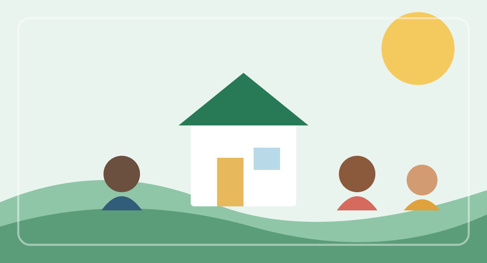

Educação
Oficinas e ações educativas para ampliar conhecimentos e possibilidades profissionais.
O Projeto Novos Caminhos conecta pessoas, voluntários e parceiros para criar oportunidades e fortalecer comunidades.

Somos uma organização social dedicada a ampliar o acesso à educação, incentivar o voluntariado e apoiar iniciativas que gerem impacto positivo e sustentável.
Oficinas e ações educativas para ampliar conhecimentos e possibilidades profissionais.
Projetos que aproximam pessoas de serviços, redes de apoio e novas oportunidades.
Uma rede de colaboradores que compartilha tempo, conhecimento e experiência.